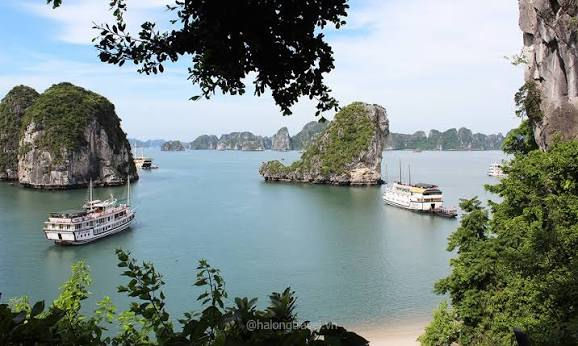
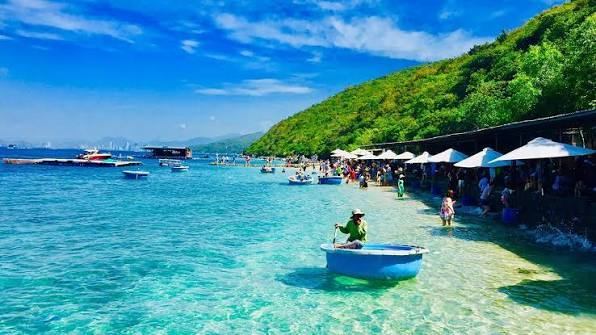
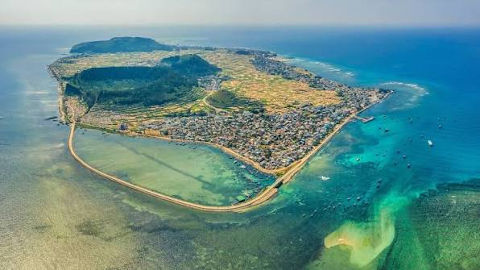
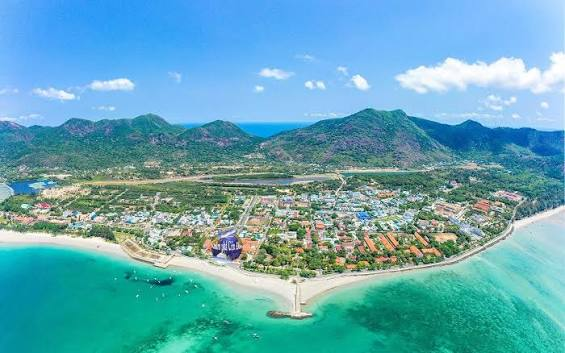
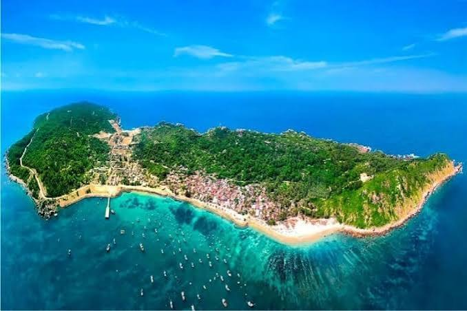

KHÁM PHÁ ĐỊA ĐIỂM DU LỊCH BIỂN VIỆT NAM
Cùng khám phá những bãi biển, hòn đảo và danh lam thắng cảnh nổi tiếng, nơi hội tụ vẻ đẹp thiên nhiên, văn hóa và những trải nghiệm đáng nhớ.
Khám phá ngayGiới thiệu
Việt Nam sở hữu hơn 3.260 km đường bờ biển cùng hàng nghìn hòn đảo lớn nhỏ, tạo nên nhiều điểm đến nổi tiếng trên thế giới. Mỗi địa danh đều mang nét đẹp riêng, từ các vịnh biển kỳ vĩ, bãi cát trắng trải dài đến hệ sinh thái san hô phong phú và nền văn hóa biển đặc sắc. Đây là lựa chọn lý tưởng cho du khách yêu thích khám phá thiên nhiên và nghỉ dưỡng.
3260 km
Đường bờ biển
4000+
Đảo lớn nhỏ
28
Tỉnh giáp biển
100+
Bãi biển đẹp
Các địa điểm nổi bật

Vịnh Hạ Long
Di sản thiên nhiên thế giới nổi tiếng với hàng nghìn đảo đá vôi, hang động kỳ vĩ và khung cảnh ngoạn mục.

Phú Quốc
Đảo Ngọc với biển xanh, cát trắng, cáp treo Hòn Thơm và những khu nghỉ dưỡng đẳng cấp.

Nha Trang
Thành phố biển sôi động nổi tiếng với Hòn Mun, VinWonders và nhiều hoạt động giải trí.

Đảo Lý Sơn
Hòn đảo núi lửa độc đáo với Cổng Tò Vò, Đỉnh Thới Lới và làn nước trong xanh.

Côn Đảo
Thiên đường nghỉ dưỡng nổi tiếng với bãi biển nguyên sơ và hệ sinh thái biển đa dạng.

Cù Lao Chàm
Khu dự trữ sinh quyển thế giới với nhiều rạn san hô đẹp, thích hợp cho hoạt động lặn biển.
Mẹo du lịch biển
Thời điểm đẹp
Từ tháng 4 đến tháng 8 là thời gian thích hợp để khám phá hầu hết các bãi biển Việt Nam.
Chuẩn bị hành lý
Mang kem chống nắng, mũ, kính râm, đồ bơi và nước uống để có chuyến đi thoải mái.
Bảo vệ môi trường
Không xả rác xuống biển, hạn chế sử dụng nhựa dùng một lần và bảo vệ các rạn san hô.